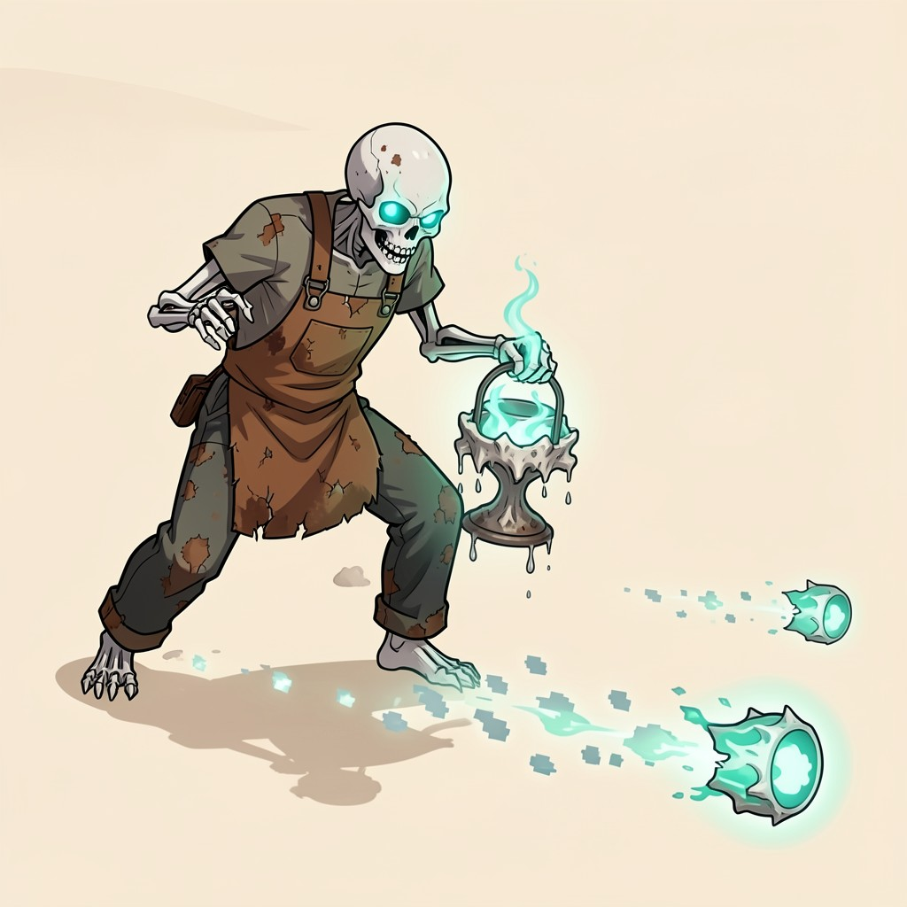
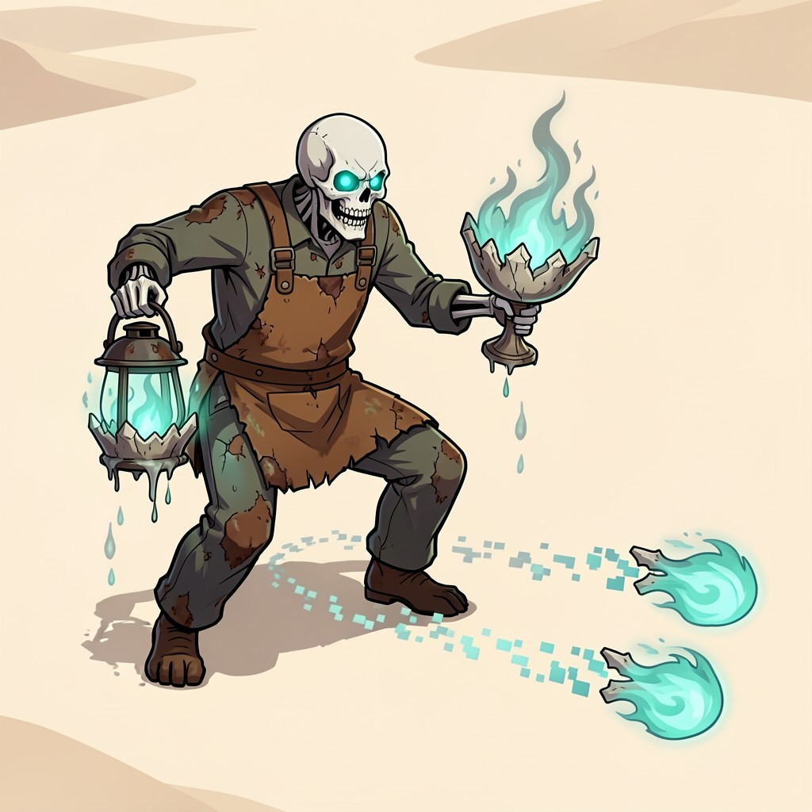

Slow-Shot Enemies
Three ideas for an enemy that shoots slow, very visible projectiles in straight lines (a bullet-heaven threat to weave through), pass 111, 28 October 2026. The pitch under each heading is mine; the two concepts under it were written by the local model, and the pictures were painted from them on the AI server. Raw answers: llm_concepts.json.
The Snake Charmer
A desert snake charmer sways on the spot and plays a pungi flute. Each tune sends glowing rattlesnake-shaped notes slithering slowly along straight lines, wiggling as they go so the eye catches them. Counter: they are slow and big, so step between them, then rush the charmer while he takes a breath.
Two concepts from the local model (qwen3.6-27b-uncensored-hauhaucs-aggressive), each painted twice by Flux.2 Klein in the game's style:
Pungi Siren
- look
- A lanky bandit in a tattered turquoise duster and wide-brimmed sombrero, his skin marked with glowing tribal tattoos that pulse as he holds an ornate brass pungi flute to his lips.
- projectile
- A jagged, rattlesnake-shaped glyph of solidified sound, rendered in high-contrast neon magenta with a thick white outline; it is scaled large (3x player hitbox) and moves at a deliberate crawl (0.8x base speed) while leaving a fading trail of geometric scale patterns that ensures crisp visibility across pale sand, blue night, and red blood moon filters.
- pattern
- Fires three projectiles in rapid succession along slightly diverging straight lines, forming a narrow forward-facing fan that covers the player's immediate path.
- tell
- The enemy raises his flute vertically, his eyes glowing bright magenta as concentric ripple effects pulse outward from the instrument for 1.5 seconds before launch.
- counterplay
- Dodge laterally across the fan's gaps or weave perpendicular to the trajectories; timing a single dash through the outer edges clears the threat without wasting cooldowns.
Canyon Cantor
- look
- A hooded nomad with a skeletal face mask and flowing crimson robes, his fingers hovering over a twin-piped flute carved from fossilized wood as desert dust swirls around his boots.
- projectile
- A coiled rattlesnake silhouette filled with pulsing amber light and bordered in thick electric blue; it is sized prominently (2.5x hero width) and glides at half-speed while shedding a continuous trail of glowing musical staves that fade after 2 seconds, maintaining high readability against pale sand, blue night, and red blood moon filters.
- pattern
- Unleashes a single, wide-sweeping volley of five projectiles spaced evenly across the screen width, fired sequentially with 0.3-second delays to create a slow-moving wall of threats.
- tell
- The enemy tilts his head back and blows into the flute, causing three visible soundwaves to compress around him in a tight spiral for 2 seconds before the projectiles materialize.
- counterplay
- Weave through the gaps between each sequential projectile by moving diagonally opposite to the firing rhythm; maintaining lateral momentum allows safe passage as the wall advances slowly.
The Prickly Pear Cannon
A rickety little cannon on wagon wheels, crewed by a goblin, wheels into range and fires big spinning cactus cannonballs in straight lines. A puff of smoke and the barrel's recoil give the tell; the balls roll through the air slowly enough to dodge. Counter: get beside the barrel, which can only turn slowly.
Two concepts from the local model (qwen3.6-27b-uncensored-hauhaucs-aggressive), each painted twice by Flux.2 Klein in the game's style:
Rickety Cactus Cannon
- look
- A grinning goblin in a tattered fringed poncho sits atop a splintered wagon frame pulling a rusted iron cannon, its barrel wrapped in thick spiky green cactus segments that vibrate intensely when charging.
- projectile
- Massive neon-green spherical cactus segment spinning slowly with bold black outlines and protruding yellow thorns, glowing brightly against all filters while leaving a trail of dust and tiny floating green spikes; slow rolling speed (60% player move) with large hitbox.
- pattern
- Fan of 7 projectiles fired in a wide semi-circle arc, creating dense gaps for the player to weave through.
- tell
- The goblin yanks a heavy iron lever, causing the cactus-wrapped barrel to glow bright orange and retract slightly while extending sharp thorns outward with a mechanical clunk sound.
- counterplay
- Dodge laterally between the wide gaps of the fan spread; prioritize killing the enemy during the wind-up animation to negate the volley entirely.
Goblin Artillery Cart
- look
- A one-eyed goblin wearing a cow-print scarf drives a jagged wooden cart hauling a multi-barrel cactus cannon, with oversized iron wheels kicking up puffs of dust as the cart lurches forward.
- projectile
- Tumbling pale-yellow cactus sphere painted with heavy black thorn outlines and a pulsing white core glow for maximum contrast on sand, blue night, and blood moon; rolls slowly while shedding small harmless cactus shards; large size with slow speed.
- pattern
- Triple Burst Spread: fires three projectiles in rapid succession within a narrow cone angle, creating parallel lines of danger that require precise weaving.
- tell
- The cart jerks backward as the goblin pulls a trigger chain, causing the barrel tips to flare white-hot and emit steam puffs while the wheels lock into place.
- counterplay
- Weave through the narrow gaps between the triple-shot parallel lines; use dash skills or knockback effects to pass through projectiles instantly.
The Lantern Wraith
A skeletal ghost miner with a lantern blows slow ghost-fire skulls that drift in straight lines, pulsing with a sickly teal glow that reads on sand, at night and under the blood moon. Counter: the skulls pass through other creatures, so use the crowd as a shield that isn't one; keep moving sideways.
Two concepts from the local model (qwen3.6-27b-uncensored-hauhaucs-aggressive), each painted twice by Flux.2 Klein in the game's style:
Phantom Prospector
- look
- A towering skeletal ghost miner draped in a tattered duster and wide-brimmed hat, rendered in clean modern anime style with thick bold outlines that pop against the high-angle canyon backdrop, its ribcage cradling an ornate iron lantern that casts sharp, elongated shadows across the pale sand.
- projectile
- A hollow bone-skull orb wreathed in a pulsating teal aura, medium-sized with a heavy bold outline to guarantee readability under pale sand, blue night, and red blood moon filters; it drifts at a deliberate crawl speed while leaving a fading phosphorescent wisp trail that maintains crisp contrast across all color grades.
- pattern
- Fires a staggered radial burst of seven projectiles fanning out in a 180-degree arc behind the player, each shot released half a second apart to form a sweeping curtain of slow-moving threats that demands constant lateral weaving through the widening angular gaps.
- tell
- The lantern flares intensely as the wraith raises its arm high, the skull inside rotating to face the player while spectral embers spiral upward in a tight vortex for exactly two seconds before launch.
- counterplay
- Expert players track the staggered launch timing to dash or weave through the narrow angular gaps between projectiles, often baiting the attack from just outside its detection radius before repositioning into the safe zones behind the wraith's firing arc.
Lantern Shade Marauder


- look
- A gaunt skeletal outlaw clad in rusted miner's overalls and a cracked leather apron, drawn with crisp modern anime proportions and bold silhouette outlines that remain instantly recognizable from the high camera angle, its hollow eye sockets burning with twin cyan embers as it clutches a wrought-iron lantern dripping spectral ash.
- projectile
- A jagged bone-chalice filled with swirling aquamarine ghost-fire, slightly larger than standard with a reinforced bold outline for unbroken readability on pale sand and through blue night or red blood moon filters; it advances at a slow, heavy crawl while shedding a continuous string of fading pixelated embers that trace its straight path clearly.
- pattern
- Releases a staggered grid volley of six projectiles arranged in two parallel rows of three, all firing simultaneously to form a slowly advancing rectangular net that covers half the screen and demands precise diagonal threading between the fixed gaps.
- tell
- The marauder slams its iron lantern against its thigh three times in rapid succession, each impact sending a visible pulse of teal light that ripples across its bony frame and the ground before the projectiles lock onto their trajectory lines.
- counterplay
- Skilled players time a single dash or movement cooldown to slip through one of the three fixed gaps in the grid, often luring the volley into nearby cactus clusters or rock formations that absorb projectiles, while maintaining constant lateral pressure to avoid being cornered by the advancing net.